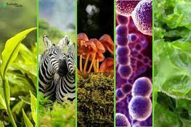

Es importante saber que las ciencias naturales es una materia acercada a la naturaleza y los seres vivios
Pero es importante que no toda la naturalesa es un ser vivo, ojo no estoy diciendo que no pertecene a la naturaleza lo que no es un ser vivo,
solo quiero que sepas que es un ser vivo y que no y para esto voy a pasar una carta y tu debes guardarla en su caja
para que puedas saber que es un ser vivo primero lea en mi libro
CONSEJOS
Puedes figarte en la imagen para identificar el ser vivo o el ser no vivo
Un ser vivo es un organismo que presenta las características fundamentales de la vida, como la capacidad de reproducirse, crecer, responder a estímulos y mantener su homeostasis. Los seres vivos incluyen a todas las plantas, animales, hongos, protistas y bacterias.

Los seres no vivos son aquellos que no poseen vida y no realizan las funciones vitales que caracterizan a los seres vivos, como nacer, crecer, reproducirse y morir. Ejemplos de seres no vivos son las rocas, el agua, el aire, la arena, los minerales, los objetos hechos por el hombre (como juguetes, mesas, etc.) y cualquier cosa que no pertenezca a un organismo vivo.